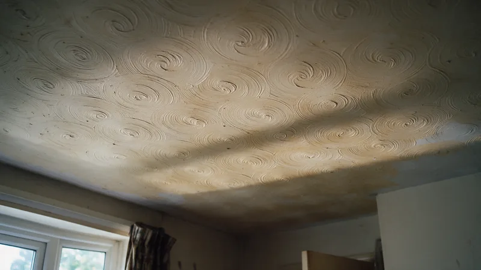

Generated photoGenerated for this demo. Not a photograph of a real job.
Swirls, stipple, combed patterns, that bobbly finish on half the ceilings built or decorated between the sixties and the nineties. Most people want it gone. There are two ways to get there and one thing that has to happen before either of them.
Start with the test, not the trowel
Textured coatings applied before the year two thousand can contain asbestos. It was added to the mix in small amounts, and it is still up there on plenty of ceilings. Left alone, sound and painted over, it is not doing anybody any harm. The risk comes from disturbing it: sanding it, scraping it dry, breaking it up, or taking a ceiling down that has it on.
So the first step on any textured ceiling in an older house is a sample tested by a laboratory. It is a small cost and it takes a few days. Until that result is back, nobody should be sanding, scraping or dry removing any of it, including you on a Saturday with a hand sander. That is not caution for the sake of it, it is the one genuinely serious thing in this article.
If the result is positive, removal is work for a firm properly licensed to do it, not for a plasterer and not for a general builder. We would tell you that and step back rather than have a go. If it is negative, both options below are open.
Option one: skim over it
The common answer, and usually the sensible one. The high points of the texture get knocked back, the ceiling gets a coat of bonding agent so plaster will grip a painted surface, and then it takes a two coat skim. You end up with a flat ceiling, the old coating is still up there undisturbed underneath, and nothing has been broken up or put into the air.
It is quieter, cleaner, quicker and cheaper than removal. Usually a day for an ordinary room. The things that stop it working are a texture so deep and sharp that it would want more than a skim to bury, a ceiling that is already sagging or has lost its key, and a coating that is loose or flaking, because plaster on top of something loose comes off with it.
The other point in its favour, where a test has come back positive, is that skimming over seals it in place rather than disturbing it. That is often the recommended route rather than the cowardly one.
Option two: take it off
Where it has been tested and come back clear, the coating can be taken off. Done properly that means a steamer or a proprietary softening gel to wet it first, scraping it off wet rather than dry, and keeping the whole lot damp while it goes in the bags. It is slow, it is heavy going above your head, and it leaves a ceiling that still usually needs skimming afterwards anyway.
So the question to ask is what removal buys you. Sometimes the answer is real: the ceiling is coming down anyway for other reasons, or there is a cornice full of detail that a skim would choke, or the texture is so heavy that burying it would lose too much ceiling height. Often the answer is nothing, and skimming over it gets you the same flat ceiling for less mess and less money.
What we would not do
Sand it. Not tested, not untested, not ever as the way to flatten a textured ceiling. Dry sanding a coating of unknown age is the exact thing all the warnings are about, and even when it is clear, it fills a house with dust that gets into everything.
We also would not quote to skim over a textured ceiling without pressing it and tapping it first. A flat finish on a ceiling that has lost its grip just adds weight to something that was already struggling.
Walls, while we are here
Textured coating turns up on walls too, usually in a hall or up a stairwell. The same rules apply exactly: test first if it is old, then either skim over it or take it off wet. On a wall you can at least work at a sensible height, which makes removal rather less unpleasant than it is on a ceiling.
The quick version
If the house or the decorating is from before the year two thousand, get a sample tested before anybody disturbs it. If it comes back positive, it is a licensed firm's job to remove, and skimming over it undisturbed is often the better answer anyway. If it comes back clear, skimming over is usually quieter, cleaner and cheaper, and removal is worth it only when there is a specific reason. And nobody sands it, either way.
Written for this demo from general trade knowledge. It is not advice on your property, and anything structural, anything wet or anything that might be an older textured coating wants somebody looking at the actual house.
More advice
While you are here.
 Generated photo
Generated photoHow long new plaster takes to dry before painting
Why the calendar is the wrong guide, what the colour is telling you, and why the first coat of paint is not a normal coat of paint.
 Generated photo
Generated photoWhat a sagging ceiling is telling you
A bulge, a brown ring or a line of nails showing through. What each one means and which of them will not wait.
Want somebody to look at the actual walls?
Tell us which rooms and your postcode. Twenty minutes with a knuckle and a straight edge beats any article.